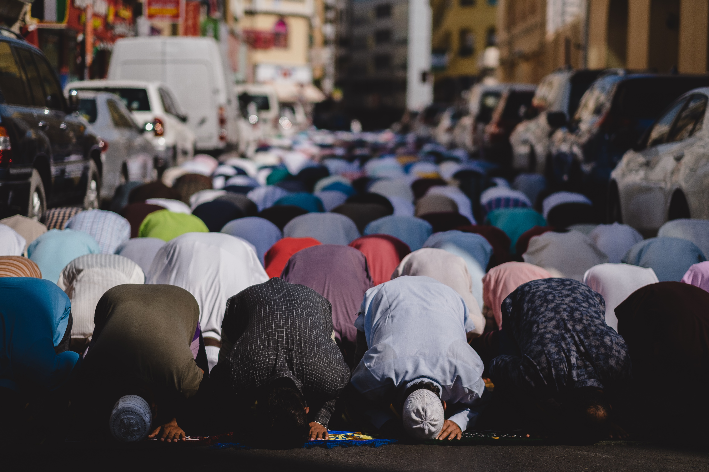

Etymology
The word Ramadan derives from the Arabic root ramiḍa or ar-ramaḍ scorching heat, dryness.
Practices
The Fasting
Ramadan is the ninth month of the Islamic calendar, observed by Muslims worldwide as a month of fasting (sawm), prayer, reflection and community. A commemoration of Muhammad's (PBUH) first revelation, the annual observance of Ramadan is regarded as one of the Five Pillars of Islam and lasts twenty-nine to thirty days, from one sighting of the crescent moon to the next. Fasting from sunrise to sunset is fard (obligatory) for all adult Muslims who are not acutely or chronically ill, travelling, elderly, pregnant, breastfeeding, diabetic, or menstruating. The predawn meal is referred to as suhur, and the nightly feast that breaks the fast is called iftar. Although fatwas have been issued declaring that Muslims who live in regions with a midnight sun or polar night should follow the timetable of Mecca, it is common practice to follow the timetable of the closest country in which night can be distinguished from day. The spiritual rewards (thawab) of fasting are believed to be multiplied during Ramadan. Accordingly, Muslims refrain not only from food and drink, but also tobacco products, sexual relations, and sinful behavior, devoting themselves instead to salat (prayer), recitation of the Quran, and the performance of charitable deeds as they strive for purity and heightened awareness of God (taqwa).
Seher
Each day, before dawn, Muslims observe a pre-fast meal called the seher. After stopping a short time before dawn, Muslims begin the first prayer of the day, Fajr.

Iftar
At sunset, families break the fast with the iftar, traditionally opening the meal by eating dates to commemorate Muhammad's (PBUH) practice of breaking the fast with three dates. They then adjourn for Maghrib, the fourth of the five required daily prayers, after which the main meal is served.
Social gatherings, many times in buffet style, are frequent at iftar. Traditional dishes are often highlighted, including traditional desserts, particularly those made only during Ramadan. Water is usually the beverage of choice, but juice and milk are also often available, as are soft drinks and caffeinated beverages. In the Middle East, iftar consists of water, juices, dates, salads and appetizers; one or more main dishes; and rich desserts, with dessert considered the most important aspect of the meal. Typical main dishes include lamb stewed with wheat berries, lamb kebabs with grilled vegetables, and roasted chicken served with chickpea-studded rice pilaf. Desserts may include luqaimat, baklava or kunafeh.
Over time, the practice of iftar has involved into banquets that may accommodate hundreds or even thousands of diners. The Sheikh Zayed Grand Mosque in Abu Dhabi, the largest mosque in the UAE, feeds up to thirty thousand people every night. Some twelve thousand people attend iftar at the Imam Reza shrine in Mashhad.
Charity
Zakāt, often translated as the poor-rate
, is the fixed
percentage of income a believer is required to give to the poor;
the practice is obligatory as one of the pillars of
Islam. Muslims believe that good deeds are rewarded more handsomely
during Ramadan than at any other time of the year; consequently,
many donate a larger portion or even all of their yearly zakāt
during this month.

Tarawih
Tarawih are extra nightly prayers performed during the month of Ramadan. Contrary to popular belief, they are not compulsory.
Recitation of Quran
Muslims are encouraged to read the entire Quran, which comprises thirty juz' (sections), over the thirty days of Ramadan. Some Muslims incorporate a recitation of one juz' into each of the thirty tarawih sessions observed during the month.